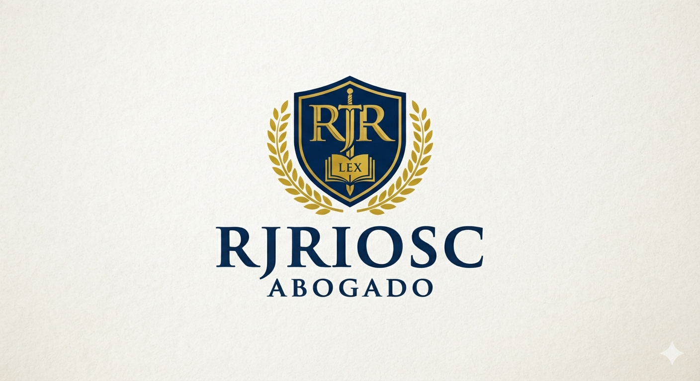

General (r) de Carabineros de Chile · Abogado
Asesoría y litigio en materia civil y de familia, con una perspectiva forjada en más de tres décadas de servicio institucional. Rigor procesal, criterio técnico y compromiso con cada causa.

Reinaldo José Ríos Cataldo es General en retiro de Carabineros de Chile y abogado en ejercicio independiente. Su trayectoria combina el mando institucional de alto nivel con una práctica jurídica exigente, orientada a la resolución seria y técnica de conflictos civiles y de familia.
Su formación dentro de Carabineros —incluyendo su rol como asesor jurídico en procesos legislativos previsionales de la institución— le entrega una lectura poco común del derecho: cercana a la administración pública, disciplinada en el procedimiento y atenta al detalle que decide una causa.
Hoy dedica su ejercicio profesional a representar personas y familias en procesos civiles y de familia, y participa activamente en el debate público sobre políticas de orden y seguridad a través de columnas de opinión y cartas editoriales.
Representación en juicios y gestiones voluntarias ante juzgados civiles, con especial experiencia en procedimientos patrimoniales complejos.
Asesoría y representación en procesos que afectan a personas y núcleos familiares, con atención particular a personas en situación de vulnerabilidad.
Para agregar o editar publicaciones, modifica el archivo publicaciones.json en tu repositorio de GitHub — no hace falta tocar esta página.
| Norma | Materia |
|---|---|
| Constitución Política PDF | Texto actualizado al 7 de octubre de 2025. |
| Ley N.º 15.386 | Estatuto del personal de Carabineros — régimen previsional y de pensiones. |
| D.L. N.º 844 | Normas complementarias del sistema previsional de las Fuerzas de Orden y Seguridad. |
| Ley N.º 20.735 | Modificaciones al régimen previsional de Carabineros de Chile (2014). |
| Ley N.º 21.560 | Ley Naín-Retamal — uso de la fuerza y legítima defensa de las policías. |
| Ley N.º 18.961 | Ley Orgánica Constitucional de Carabineros de Chile. |
| Código Civil | Régimen general de obligaciones, contratos y sucesiones. |